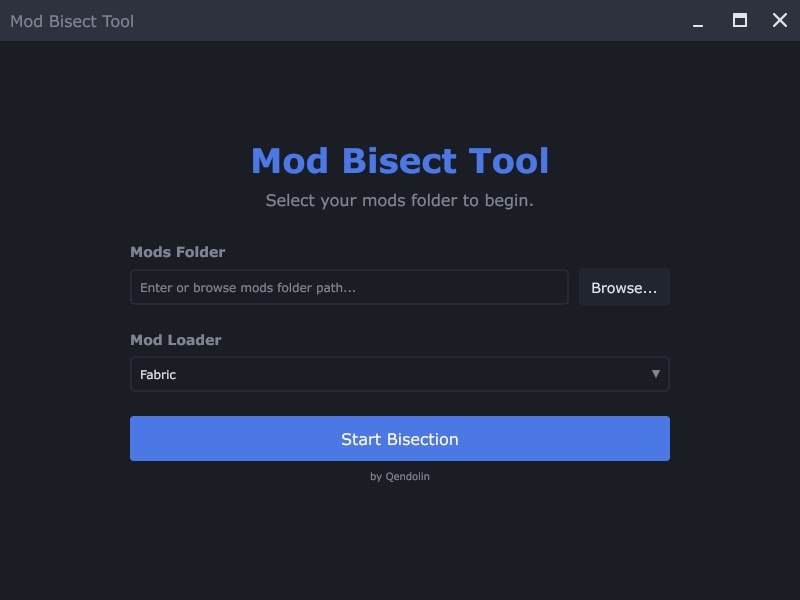
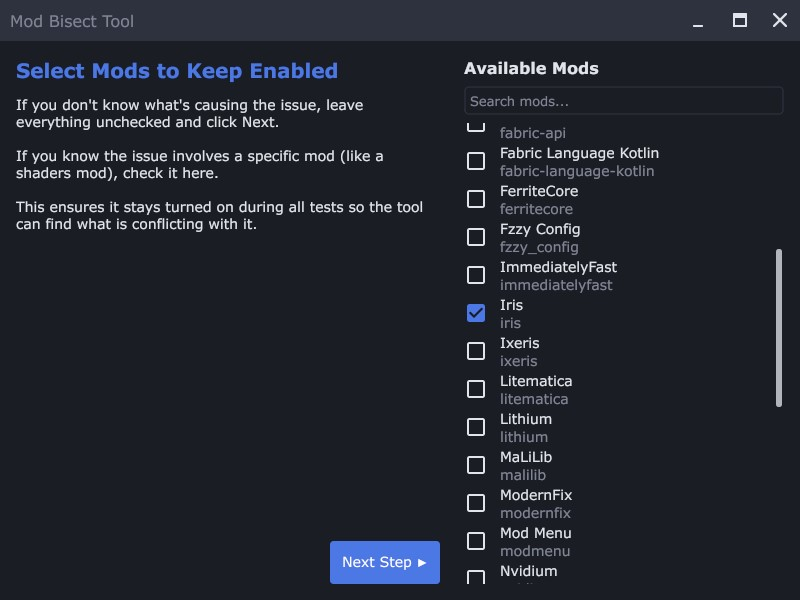
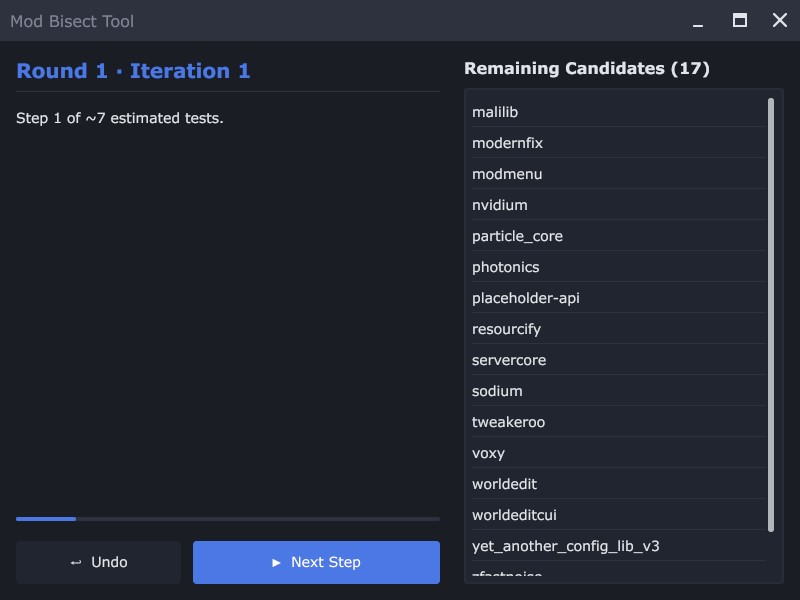
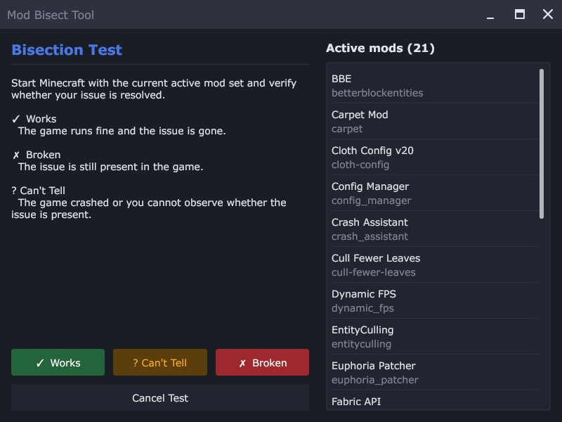
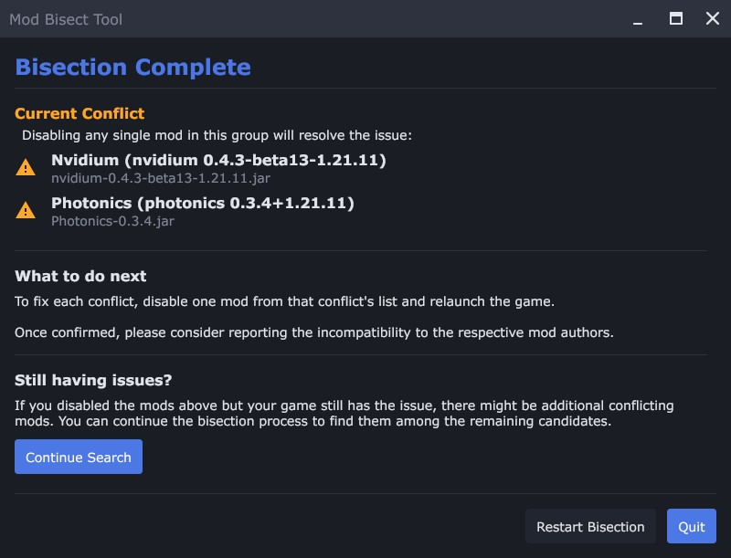

GUI User Guide
This guide covers the graphical version of the Mod Bisect Tool. If you are using the terminal version, see the TUI User Guide.
The GUI follows the same bisection process as the TUI, but is driven by buttons, a windowed interface, and native dialogs instead of keyboard shortcuts.
Installation
- Open the download page. It detects your operating system and recommends the appropriate architecture.
- Choose Latest or Stable, select Graphical, then choose your operating system and architecture.
- Click Download. On macOS, extract the ZIP archive before opening the application.
-
For Linux AppImages, make the file executable after downloading:
This adds the execute permission bit required by Linux desktop environments.chmod +x ./mod-bisect-gui-*.AppImage
Language
The GUI uses the operating system locale automatically. The setup
screen includes a language selector; English is currently the only
available language. For testing or scripting, the locale can also be
selected with the --locale option:
mod-bisect-gui --locale enHow to Use the Tool
Using the tool is a simple, guided process.
Step 1: Setup
When you first launch the tool, you'll see the setup screen.
Action
-
Enter the full path to your Minecraft
modsfolder in the text field, or click Browse... to pick it with your operating system's file picker. - Press the Start Bisection button.
The tool will then analyze all your mods, which may take a few
moments. It also detects which mod loader your mods folder is set up
for (Fabric, (Neo)Forge, (Neo)Forge with Fabric via Sinytra Connector,
or Fabric with (Neo)Forge via Kilt) and preselects it in the
Mod Loader dropdown. You can pick a different loader
from the dropdown, or force one from the command line with the
-loader flag.

Step 2: Choose Mods to Keep Enabled
After the mods are loaded, you'll see a screen titled “Select Mods to Keep Enabled.”
Action
- If you don't know what's causing the issue, leave everything unchecked and press Next Step ▶.
- If you know the issue involves a specific mod (like a shaders mod), check it here. This ensures it stays turned on during all tests so the tool can find what is conflicting with it.
You can use the Search mods... field to filter the list by mod name or ID.
Force-enable mods that are needed to see the problem.
If the issue you're trying to track down only happens when a specific mod is active, you should check that mod here. For example, if you're using Iris and something only breaks when shaders are turned on, you'll need to keep Iris enabled. Otherwise, the tool might disable it during testing, and you wouldn't even be able to tell if the issue still happens.

Step 3: The Main Screen
This is your mission control. It shows a progress bar, the current step, and a list of the remaining candidates (or the current conflict set when a set has been found).
Action
- Press the ▶ Start Bisection button to begin the first test. On later steps the button reads ▶ Next Step.
- You can also press ↩ Undo to step back to a previous test.
Back up worlds before testing if you will load them! This is not needed for servers, new test worlds, or tests that do not load a world.

Step 4: The Test Screen
Once a test is prepared, the tool switches to a test prompt with the Active Mod Set listed. It has just enabled a specific set of mods in your folder.
Action
- Launch Minecraft using your normal mod loader (Fabric, Quilt or NeoForge).
- Check if the problem still occurs. Does the game crash? Does the bug you're hunting still happen?
-
Return to the tool and click the button that matches the outcome:
- ✓ Works: The problem did not happen. The game loaded and worked as expected.
- ✗ Broken: The problem did happen, such as a crash or a visible bug.
- ? Can't Tell: The result was unclear. For example, the game crashed before you could check, or something else prevented you from observing the issue.
- Cancel Test: Aborts the current test and goes back.
The tool will use your answer to narrow down the search and prepare the next test. Repeat this process until a result is found.

Step 5: The Results
Once the tool has found a problematic mod (or set of mods), it will show you the Result screen.
Action
- Take note of the problematic mods listed.
- To fix the issue, disable at least one mod from each conflict set listed. The tool will also tell you if any other mods depend on the problematic ones; consider disabling them as well.
-
The main button on this screen depends on whether the conflict set
is complete:
- Next Step: shown while the set is not yet complete. Pressing it goes back to the main screen to continue searching for the remaining members of the conflict set. You don't have to continue, though: a single mod is already enough to fix the issue.
- Quit: shown once the set is complete. It closes the application.
-
You can also use these buttons:
- Continue Search: start looking for the next, unrelated conflict among the remaining mods.
- Restart Bisection: begin the whole search over from scratch.

Dependency Overrides
Sometimes a mod author forgets to list a dependency in their metadata.
This tool can add or remove those entries with a file named
fabric_loader_dependencies.json.
This tool also extends the standard format with the ability to
override the
provides field, which is useful for fixing complex
library conflicts.
The GUI loads override files in this order:
- The current working directory
-
The Minecraft
configfolder next to yourmodsfolder - The built-in overrides included with the tool
On macOS, the GUI app bundle does not use the current working
directory for this file. It looks in
~/Library/Application
Support/mod-bisect-tool/fabric_loader_dependencies.json
instead.
Log Files
The app creates its log file in the first folder that works, in this order:
- The current working directory
-
The OS log directory:
- macOS:
~/Library/Logs/mod-bisect-tool - Windows:
%LOCALAPPDATA%/mod-bisect-tool/logs -
Linux:
$XDG_STATE_HOME/mod-bisect-tool, or~/.local/state/mod-bisect-tool
- macOS:
- The OS temp directory, under
mod-bisect-tool
If you run the macOS .app, it will usually not create the
log in the current working directory because the app is launched from
its bundle location.